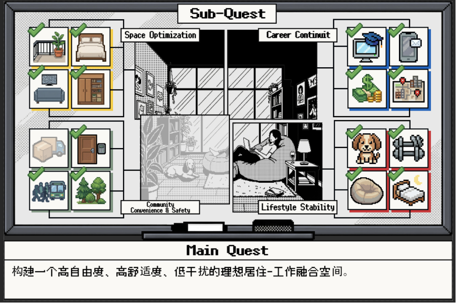
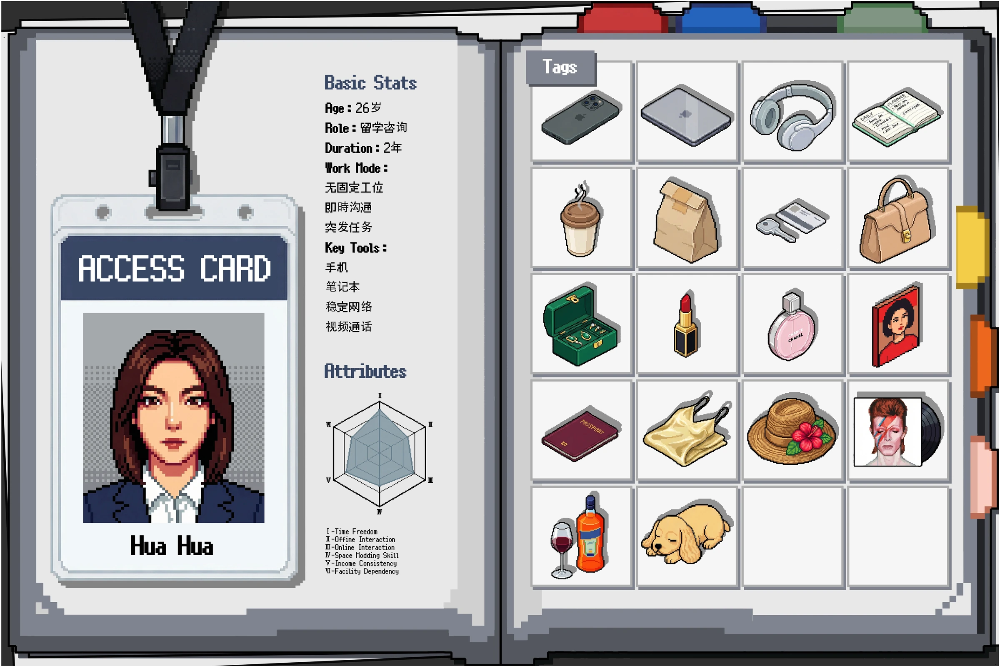
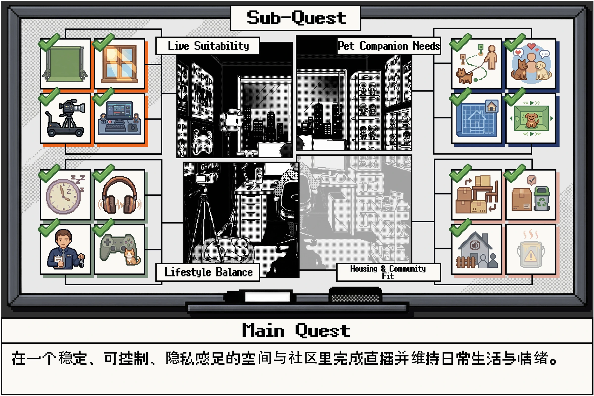
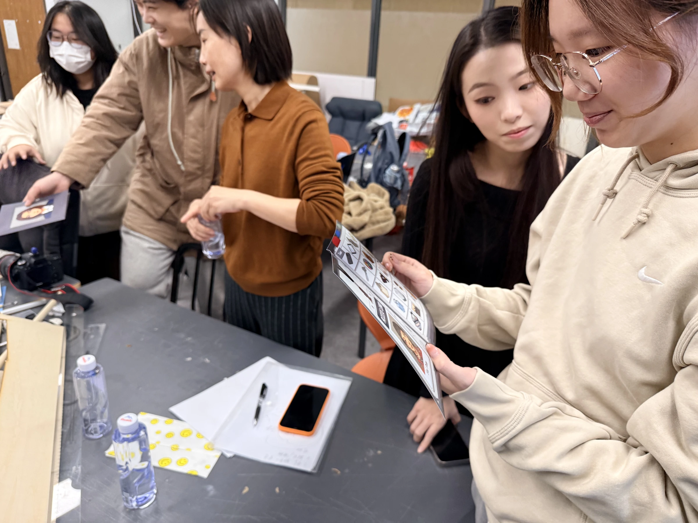
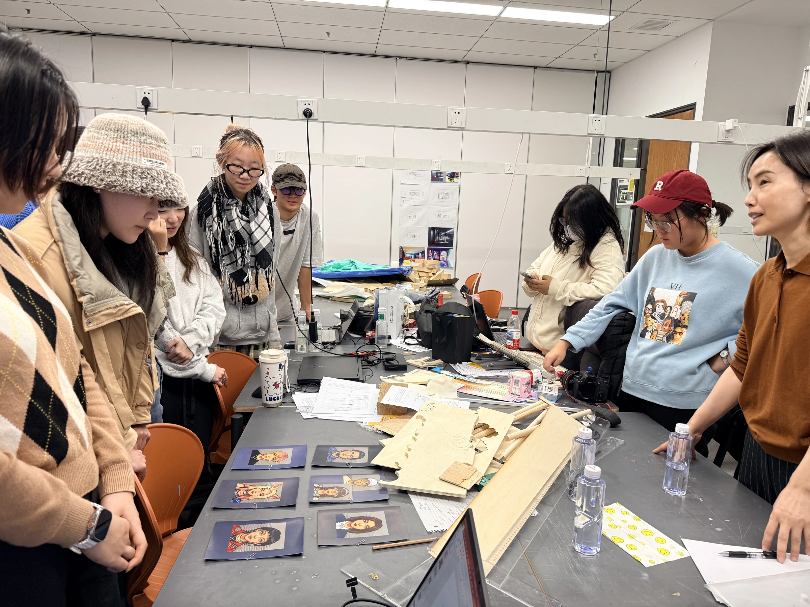

AI teaching practice
AI Teaching Practice: Community Design
Exploring communities for home life and hybrid work through AI tools and resident role-play.

Course context
The course focused on emerging spatial needs in communities where home life and hybrid work overlap. Taking Beijing Pixel as the design site, students began with everyday routines and patterns of behavior to consider how a neighborhood can support work, social interaction, health and emotional connection.
AI tools & resident role-play
Students used AI tools for problem discovery, user analysis, scenario building and the translation of insights into spatial design. Game-inspired resident role cards encouraged them to trace activities from different residents’ perspectives. By connecting virtual management logic with physical spatial experience, the course explored sustainable, participatory approaches to community renewal.
Collaborative learning process
Within a problem-led learning framework, students worked in groups through the full process of research, concept development and design communication. The task cards, resident role card and classroom photographs document this teaching practice, linking individual needs to discussions about shared community spaces.
Teaching assistant experience. The materials shown document the course and its collaborative learning process.








